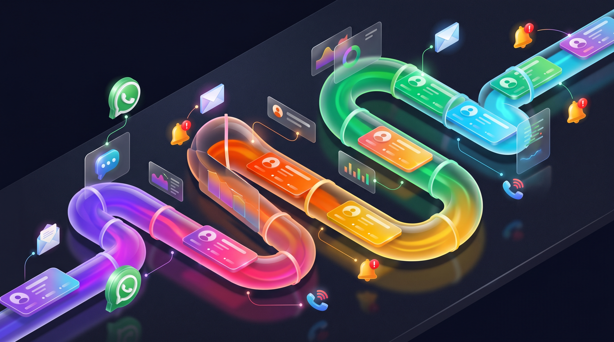
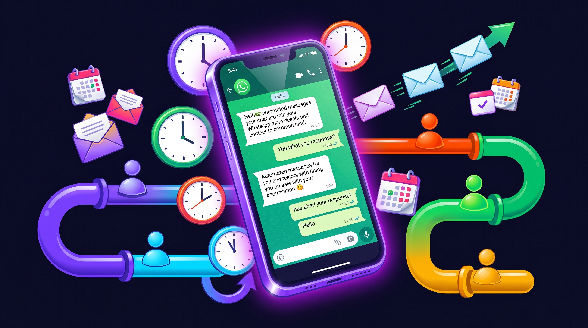

Imagina esto: inviertes RD$30,000 en Meta Ads, generas 100 leads, y al final del mes solo cerraste 3 ventas. ¿Qué pasó con los otros 97? No es que no estaban interesados — es que nadie les dio seguimiento. Nadie les escribió a las 2 horas. Nadie les mandó un recordatorio a los 3 días. Se fueron con la competencia que sí respondió primero. Este artículo explica cómo un CRM evita que eso siga pasando.
Si ya leíste nuestra guía completa de marketing digital en RD, sabes que generar leads es solo la mitad de la ecuación. La otra mitad — la que genera dinero real — es convertir esos leads en clientes. Y para eso necesitas un sistema.

El Problema: Estás Perdiendo Dinero Sin Saberlo
En República Dominicana, la mayoría de negocios manejan sus leads así: llega una consulta por Instagram DM, la ven, responden cuando pueden — a veces a la hora, a veces al día siguiente. Si el cliente no contesta de vuelta, se olvidan. Si llegan 10 consultas en un día, 3 se pierden en el scroll. No hay registro, no hay seguimiento, no hay sistema.
El resultado es predecible: más del 60% de los leads que llegan listos para comprar se van con la competencia. No porque tu producto sea malo. No porque tu precio sea alto. Porque la competencia respondió primero.
Estudios muestran que contactar a un lead dentro de los primeros 5 minutos aumenta la probabilidad de cierre en más del 80%. Después de 30 minutos, esa probabilidad cae drásticamente. ¿Y después de 24 horas? Prácticamente estás tirando ese lead a la basura.
El problema no es falta de leads — es falta de sistema. Y ese sistema se llama CRM.
Qué Es un CRM y Por Qué Tu Negocio en RD Lo Necesita
CRM significa Customer Relationship Management — gestión de relaciones con clientes. En términos simples, es un sistema que centraliza toda la información de tus clientes y leads en un solo lugar: quiénes son, de dónde vinieron, qué necesitan, en qué etapa del proceso de venta están, y qué seguimiento necesitan.
Piénsalo como un cerebro externo para tu negocio. En vez de depender de tu memoria, de notas en el teléfono o de conversaciones perdidas en WhatsApp, todo está organizado en un solo dashboard donde puedes ver:
- Todos tus leads — nombre, teléfono, email, de dónde llegaron (Instagram, Google, referido)
- En qué etapa están — nuevo, contactado, cotización enviada, negociación, cerrado
- Historial completo — cada mensaje, cada llamada, cada email intercambiado
- Próximos pasos — recordatorios automáticos de a quién contactar hoy
- Métricas — cuántos leads entran, cuántos conviertes, cuánto tardas en responder
Pipeline de ventas con CRM
nuevo
(< 5 min)
enviada
activo
cerrada
Para un negocio pequeño en RD, un CRM es la diferencia entre perseguir leads de memoria y tener un sistema que te dice exactamente a quién contactar, cuándo y con qué mensaje. No necesitas un equipo de ventas de 20 personas para justificarlo — si manejas más de 10 leads al mes, un CRM ya te va a hacer ganar más dinero del que cuesta.
La realidad en República Dominicana es que la mayoría de competidores no usa CRM. Eso te da una ventaja enorme: mientras ellos pierden leads en el scroll de WhatsApp, tú tienes un sistema que no deja escapar ninguno.
AGENDA UNA CONSULTA GRATISPor Qué WhatsApp Solo No Alcanza Como CRM
En RD, WhatsApp es la herramienta de comunicación número uno. El 78% de los dominicanos la usa diariamente. Y WhatsApp Business — la versión para negocios — ofrece funciones útiles: catálogo de productos, respuestas rápidas, etiquetas para organizar chats y mensajes automáticos de bienvenida.
Para un negocio que recibe 5-10 consultas por semana, WhatsApp Business funciona. Pero cuando empiezas a crecer — cuando tienes Meta Ads corriendo y generando 20, 50 o 100 leads al mes — WhatsApp solo se queda corto.
WhatsApp Business vs CRM dedicado
Los límites de WhatsApp como CRM:
- No puedes automatizar secuencias: Si un lead no responde al primer mensaje, ¿le mandas un segundo a los 3 días? ¿Un tercero a la semana? Con WhatsApp tienes que recordarlo tú. Con un CRM, se envía automáticamente
- No tienes pipeline visual: No puedes ver de un vistazo cuántos leads tienes en cada etapa, cuántos están esperando cotización, cuántos necesitan seguimiento
- No puedes medir: ¿Cuál es tu tasa de cierre? ¿Cuánto tardas en promedio en responder? ¿De qué canal vienen tus mejores leads? Sin datos, no puedes optimizar
- No escala: Si contratas un vendedor, ¿cómo le asignas leads? ¿Cómo sabes qué conversaciones ya manejó? Con WhatsApp, es un caos

Cómo Elegir el CRM Ideal para Tu Negocio en República Dominicana
No todos los CRM son iguales, y no todos aplican para el mercado dominicano. Un negocio en RD necesita un CRM que cumpla con tres requisitos no negociables: integración con WhatsApp, soporte en español y precio accesible.
Estas son las opciones que recomendamos según el tamaño y necesidades de tu negocio:
Para empezar (gratis - US$15/mes):
- WhatsApp Business + Google Sheets: El setup más básico. WhatsApp para comunicarte, una hoja de cálculo para registrar leads manualmente. Funciona si recibes menos de 20 leads al mes
- HubSpot CRM (gratis): Hasta 1,000 contactos gratis. Pipeline visual, email tracking, tareas. No tiene integración nativa con WhatsApp pero puedes conectarlo con Zapier
- Pipedrive (US$14/mes): El CRM más simple e intuitivo para equipos de venta pequeños. Pipeline visual excelente, app móvil sólida
Para escalar (US$50-300/mes):
- Clientify (US$39/mes): CRM diseñado para el mercado hispano. Integración nativa con WhatsApp, automatización de marketing, landing pages incluidas
- GoHighLevel (US$97-297/mes): La plataforma todo-en-uno. CRM + automatización + landing pages + formularios + calendario + WhatsApp + email marketing. Es lo que usamos en MM Agency para nuestros clientes
Setup mínimo de CRM para negocios en RD
La regla más importante al elegir CRM: empieza simple. No necesitas la herramienta más cara ni la más completa. Necesitas una que vayas a usar realmente. Un CRM que no usas es peor que no tener CRM — porque te da la ilusión de que tienes un sistema cuando en realidad no lo estás ejecutando.
Las 5 Automatizaciones que Todo Negocio en RD Necesita
La magia del CRM no está en guardar contactos — está en automatizar el seguimiento. Estas son las 5 automatizaciones que transforman la forma en que un negocio convierte leads en clientes:
1. Respuesta automática instantánea
Cuando un lead llena tu formulario o te escribe por primera vez, el CRM envía un mensaje de WhatsApp personalizado en menos de 2 minutos. No un "Gracias por contactarnos" genérico — un mensaje que menciona su nombre y lo que pidió: "Hola [Nombre], vi que te interesa [servicio]. Te cuento cómo funciona..."
2. Secuencia de seguimiento si no responde
Si el lead no contesta al primer mensaje, el CRM envía automáticamente:
- Día 2: Un mensaje de valor con un caso de éxito o testimonio relevante
- Día 5: Un recordatorio suave con pregunta abierta
- Día 10: Un último intento con oferta de valor (descarga gratis, consulta sin costo)
3. Notificación al vendedor
Cada vez que entra un lead nuevo, el vendedor asignado recibe una notificación en su teléfono con toda la info: nombre, teléfono, de dónde vino (qué anuncio, qué página) y qué pidió. No tiene que revisar el CRM — la alerta llega a él.
4. Recordatorios de citas
Si agendas una cita o llamada con un lead, el CRM envía recordatorios automáticos 24 horas antes y 1 hora antes — por WhatsApp y email. Esto reduce los no-shows en un 40-60%.
5. Seguimiento post-venta
Después de cerrar la venta, el CRM envía automáticamente una encuesta de satisfacción a los 7 días y pide una reseña en Google a los 14 días. Las reseñas son oro para tu SEO local — y la mayoría de clientes las dejan si les pides en el momento correcto.
Implementación: De Cero a CRM Funcionando en 7 Días
No necesitas meses para implementar un CRM. Con el enfoque correcto, puedes tener un sistema funcional en una semana. Aquí está el plan día por día:
Plan de implementación: 7 días
Los errores más comunes en la implementación:
- Hacer el CRM demasiado complejo: Empieza con 4-5 etapas en el pipeline, no con 15. Puedes agregar complejidad después
- No usar las automatizaciones: Si tienes CRM pero sigues enviando todos los mensajes manualmente, estás pagando por una agenda glorificada. Las automatizaciones son el ROI real
- No revisarlo diariamente: El CRM funciona solo si lo consultas al inicio de cada día. Abre el dashboard, revisa qué leads necesitan contacto, ejecuta. 10 minutos diarios
- No conectar los canales: Si tus ads de Meta generan leads que no entran al CRM automáticamente, vas a seguir perdiéndolos. La conexión debe ser automática, no manual
La implementación no es el reto. El reto es la consistencia. Un CRM que usas todos los días te va a transformar el negocio. Un CRM que configuras y no abres más es dinero botado. Comprométete a 30 días de uso diario — después de eso se vuelve hábito.
CRM para Negocios en RD: FAQs
Conclusión
Tus leads se te escapan porque no tienes un sistema que los retenga. No es un problema de producto, de precio ni de mercado. Es un problema de proceso — y un CRM lo resuelve.
En República Dominicana, donde la mayoría de negocios todavía gestiona leads desde el WhatsApp personal, implementar un CRM con automatización básica te pone inmediatamente en el top 10% de tu industria en términos de experiencia del cliente. Eso se traduce en más ventas cerradas con los mismos leads.
No necesitas la herramienta más cara. Necesitas una que uses todos los días. Empieza con el setup mínimo, automatiza las 5 cosas que mencionamos, y comprométete a 30 días de uso consistente. Los resultados hablan solos.
Si quieres que te armemos el CRM completo con automatización de WhatsApp — configurado, conectado a tus ads y listo para recibir leads — agenda una consulta gratis.

0 Comentarios